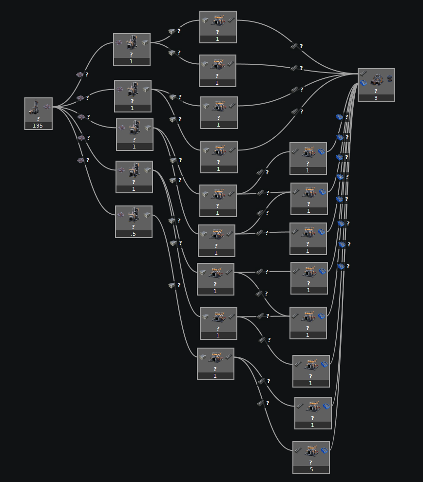
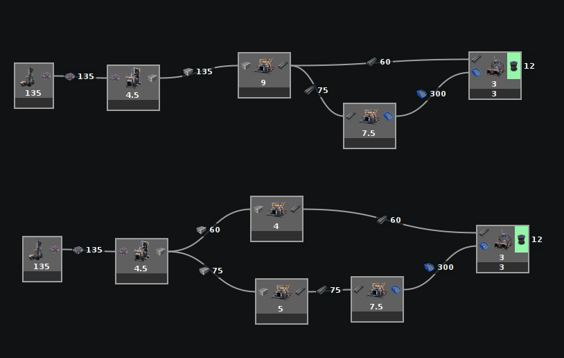
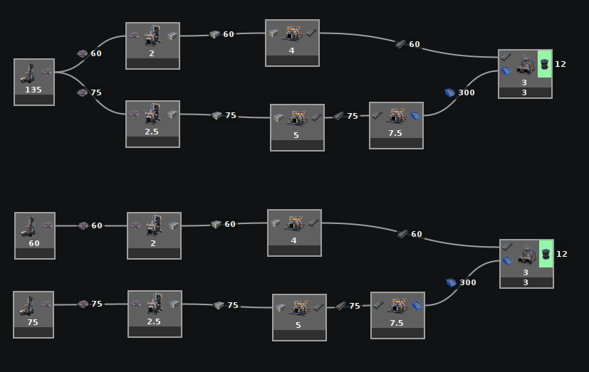
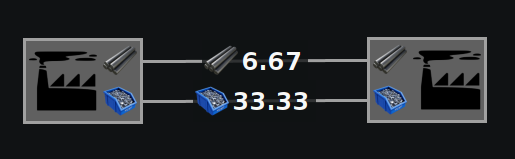
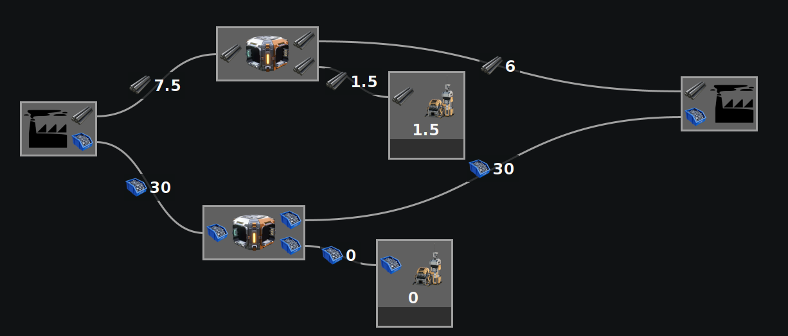
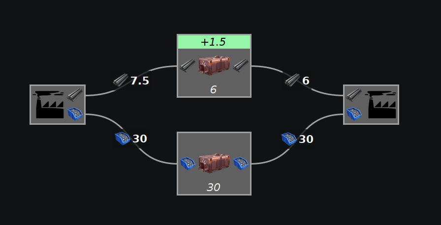

When using the Full calculator, the calculations can slow down a lot on larger builds.
There may be a breakthrough in the calculation algorithm in the future, but for now here is what you can do.
Switch to a different calculator. The manual calculator is always fast and some people find it more intuitive.
Use the following building tips to allow the Full calculator's optimizations to be better used.
Don't specify each individual machine, be more abstract

Do NOT specify each machine. Just place one and let the modeler tell you how many you need.


Compact the above into something that looks more like one of these four builds.
Reduce connections between sections
The Full calculator has optimizations in it to simplify certain builds. If feedback loops between sections can be eliminated, then those sections can be calculated independently, greatly improving performance.
If there are zero connections between sections, then they can be calculated independently.
If there is only one connection between sections, optimizations allow them to also be calculated independently.
If there are multiple connections between sections, then preventing a feedback loop may allow them to be calculated independently.
Remove feedback loops

In this example, we have two outposts where a backup of the rods could affect the amount of screws produced, which could affect the rods consumed, leading to a feedback loop.

By adding priority splitters allowing overflow to go to a sink, it means that if the rods or screws backup from the right outpost, that backup cannot propagate into the left outpost because they will go to the sink instead.
This means that any changes to the right outpost cannot affect the left outpost. The Full calculator can see this and split the two up into much, much smaller problems, allowing for far quicker calculations.

Properly set storage containers can also work for a less cluttered look. In this example they are set to empty, so any extra will be collected instead of getting backed up.